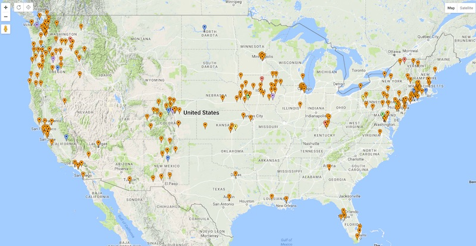
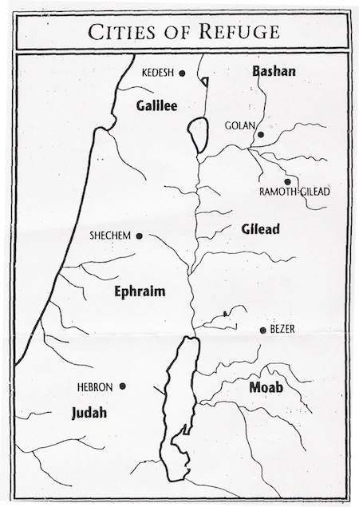

2017-02-15 08:00
Donald Trump campaigned with a promise to deport three million people. A mass expulsion of this scale would not only be a human catastrophe but also a civil liberties nightmare and a drain on local law enforcement agencies expected to cooperate with Immigration and Customs Enforcement, known by the strangely appropriate acronym ICE.
As a result many cities have enacted “sanctuary” or “welcome” policies designed to keep immigrant populations safe. Most of these policies restrict cooperation with ICE in some way. However, on January 25th the Trump administration retaliated by issuing an Executive Order which cuts off federal funds to so-called “Sanctuary Cities,” a move yet to be tested in the courts.
In an ironic reversal, it now falls to Liberal states and cities to use the Constitution’s 10th Amendment (states rights) provisions to resist oppressive Executive Orders.
Closer to home, it seems only natural that New Bedford – a city known for Abolitionist Frederick Douglass, a strong underground railroad during slavery, and a vibrant immigration population today – would be a Sanctuary City. But New Bedford is afraid of joining several other Massachusetts localities – Amherst, Boston, Cambridge, Hampden County, Holyoke, Lawrence, Northhampton, Somerville, and Springfield – in resisting the president’s xenophobic decrees.
But momentum and resistance is growing. There are now hundreds of Sanctuary Cities throughout the United States. In addition, there are four Sanctuary states – California, Connecticut, New Mexico, and Colorado – with varying protections for immigrants.

A malignant group with a benign name, the Center for Immigration Studies, echoes Donald Trump’s claims that immigrants are rapists and criminals. However, the facts are quite different. An article in the Annenberg Public Policy Center’s factcheck.org cites not only ICE data itself, but law enforcement officials and the results of a University of California study debunking claims like Trump’s. There is no spike in crime in cities with immigrants, and law enforcement would prefer to hear from those impacted by crime rather than drive them underground.
But Sanctuary is nothing new. In fact, it’s an ancient concept with roots in all the Abrahamic faiths.
During the Reagan years hundreds of Central Americans found refuge in Catholic churches offering protection from murderous regimes supported by Reagan Republicans. Though there was, and still is, no legal basis in the United States for a religious institution to offer asylum, the sight of armed federal agents storming a church would have been shocking. By 1987 over 440 American cities had become “sanctuary cities.”
The Catholic tradition of offering sanctuary to refugees, the persecuted, and even criminals stretches back to at least Medieval times. Even after the Catholic Church no longer ruled an empire it still offered sanctuary and it was recognized. For over a thousand years, for example, Britain recognized asylum granted by the Church.
In the Islamic tradition, Muhammad had to flee from Mecca to Medina, and the hijrah (migration) is regarded as an example of the Islamic obligation to provide protection from oppression, even to non-Muslims:
And if anyone of the disbelievers seeks your protection, then grant him protection […] and then escort him to where he will be secure. (Surah 9:6)
It might interest those who claim to be guided by scripture that the idea of Sanctuary is also found in the Old Testament.
According to one of the first stories in the Bible, after Cain murdered his brother Abel he fled to the land of Nod. There he built a city called Enoch, named after his son. Thus, according to tradition, the first human city was founded on both a crime and an act of redemption.
In another Bible passage, before the Israelites were permitted to cross the Jordan into Canaan, they were instructed to build cities of refuge (arei miklat) where those guilty of manslaughter could flee to avoid blood retribution. The cities were run by Levites who, everyone knew, would treat the new citizens and their fellow human beings fairly. Unlike the current presidency.
Today the New Sanctuary Movement is ecumenical and not even always Christian. In many communities Jewish, Quaker, Episcopal, and Unitarian congregations have joined Catholics in protecting their most vulnerable friends and neighbors – renewing not only the ancient traditions of their faiths but putting faith into practice.
